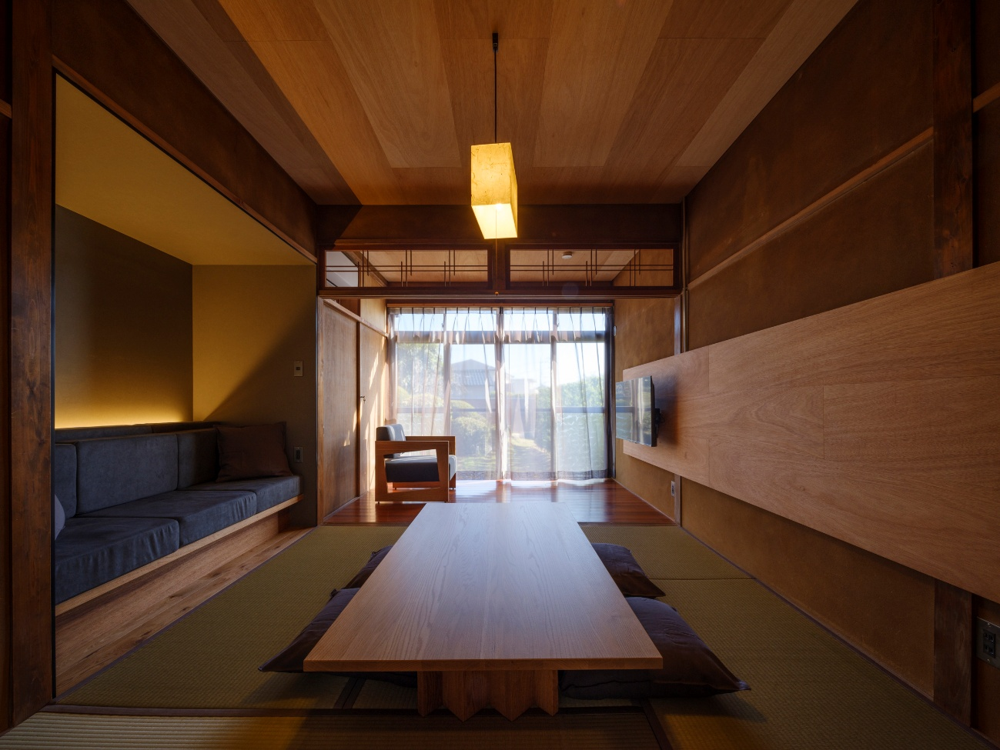
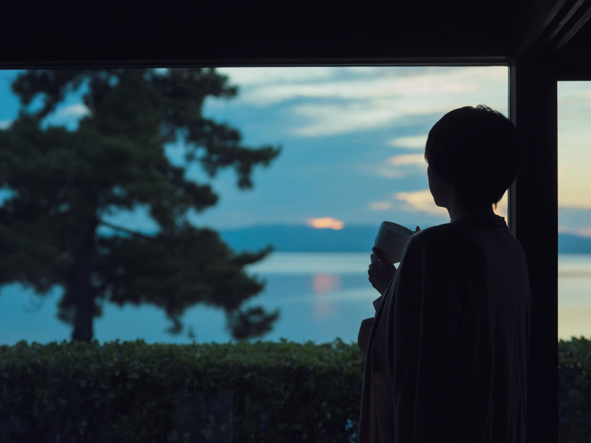
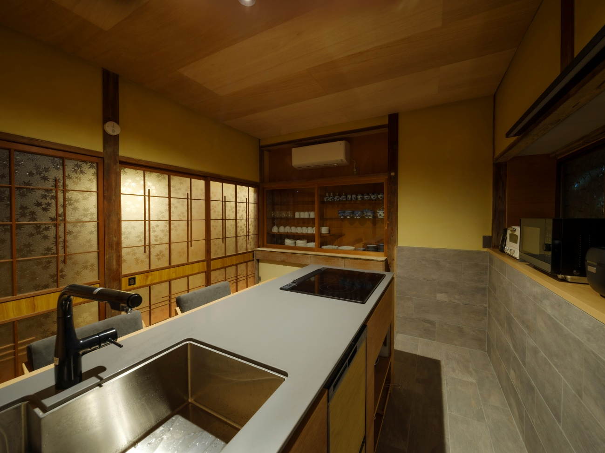
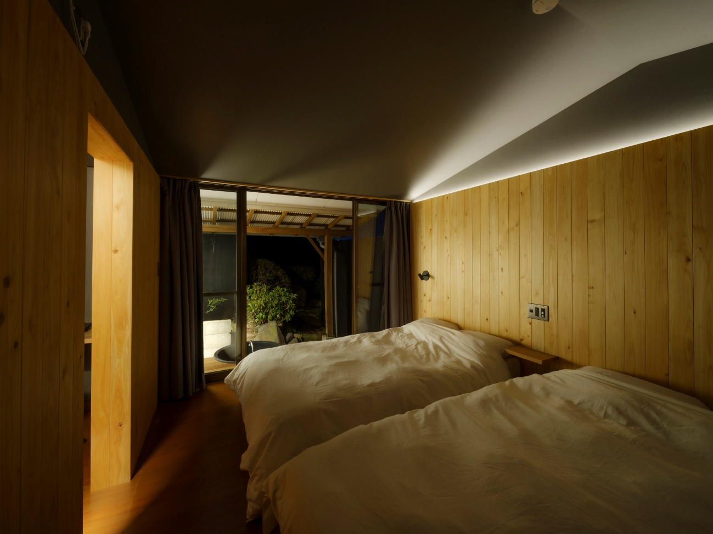

EXPERIENCE
여박에서의 일상
오래된 나무의 따스함, 다다미 향기, 縁側로 스며드는 빛.
여박의 하루는 여기서만 느낄 수 있는 감촉으로 가득합니다.

거실·다다미방
다다미와 나무에 둘러싸인, 일본의 시간이 흐르는 공간.

縁側·바다 전망
창 너머로 펼쳐지는 오무라만. 아침도 밤도, 여기서만의 풍경.

부엌
현지 식재료로 요리할 수 있는 본격 부엌. 근처 마트에서 장 보기.

노천탕
여행의 피로를 풀어주는 개방적인 욕조. 밤하늘을 올려다보며.

워크스페이스
여행하면서 일도 할 수 있는 환경. 장기 체류에도 대응.

침실
더블베드와 세미더블베드, 인원에 따라 다다미방 이불도 준비됩니다.